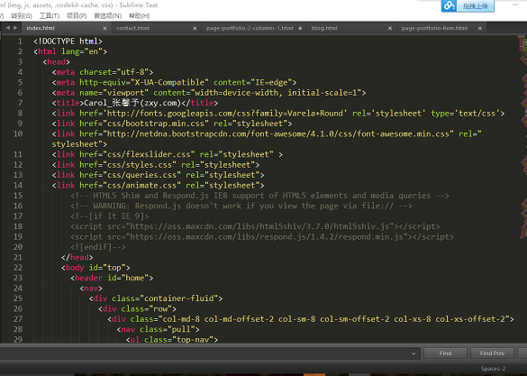

移动互联网课程设计
2016年7月7日：个人主页制作过程视频
制作自己的简历
首先在网页上找一个比较合适的个人主页模板（简洁明了为主），然后下载到自己的电脑里。我选择的是先在Sublime Test上进行改写HTML5代码，写好后用Java EE上，然后将我们的Web文件输出，输出为WAR文件。
关于个人主页的制作视频
制作自己的简历
首先在网页上找一个比较合适的个人主页模板（简洁明了为主），然后下载到自己的电脑里。我选择的是先在Sublime Test上进行改写HTML5代码，写好后用Java EE上，然后将我们的Web文件输出，输出为WAR文件。